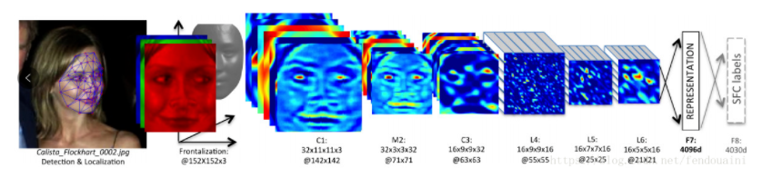
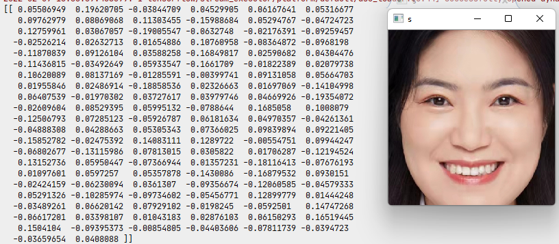
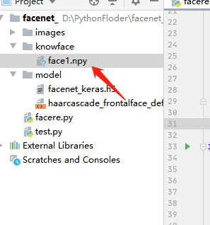

任务三 人脸特征提取
【任务描述】
目前比较主流的人脸特征提取方法是把人脸图像通过神经网络，得到一个特定维数的特征向量，该向量可以很好地表征人脸数据，使得不同人脸的两个特征向量距离尽可能大，同一张人脸的两个特征向量尽可能小，这样就可以通过特征向量来进行人脸识别，可以理解为如下步骤：

【任务实施】
步骤1 人脸特征提取
在本任务开始之前，你需要有一个已训练好了的face_net模型，可以到如下地址中获得。
人脸特征提取的第一步就是要把人脸从图片中获取出来，根据任务一的流程我们很容易就可以获得人脸ROI图片，我们可以将过程封装起来直接调用即可。
import tensorflow.keras as k
import os
import cv2
import numpy as np
import matplotlib.pyplot as plt
# 获得人脸ROI区域
def get_face_roi(img):
gray = cv2.cvtColor(img, cv2.COLOR_BGR2GRAY)
faces = face_date.detectMultiScale(gray, 1.3, 5)
for face in faces:
x, y, w, h = face
img = img[y:y+h,x:x+w]
return img
接下来，定义一个函数，用来获取人脸特征：
# 获得人脸特征
def get_face_features(img):
# 将图片缩放为模型的输入大小
image = cv2.resize(img,(160,160))
image = np.asarray(image).astype(np.float64)/255.
image = np.expand_dims(image,0)
# 使用模型获得人脸特征向量
features = model.predict(image)
# 标准化数据
features = features / np.sqrt(np.maximum(np.sum(np.square(features), axis=-1, keepdims=True), 1e-10))
return features
最后，在main函数中调用这2个函数，即可获得人脸特征：
if __name__ == '__main__':
# 加载模型
face_date = cv2.CascadeClassifier('model\haarcascade_frontalface_default.xml')
model = k.models.load_model(r'model\facenet_keras.h5')
model.summary()
# 加载图片
image_path = r'images\face1.jpg'
img= cv2.imread(image_path)
img_roi = get_face_roi(img)
features = get_face_features(img_roi)
print(features)
# 显示特征
plt.imshow(features)
plt.show()
cv2.imshow('s',img_roi)
cv2.waitKey(0)
程序运行结果如下：

步骤4 人脸特征库搭建
人脸特征库搭建有一个最简单的方法，就是直接保存人脸图片即可，但是这种方式有两个缺点：1.在进行网路传输时开销较大；2.在终端进行加载时速度较慢（因为需要重新找到人脸，获取特征），所以为了更好的性能，一般会直接提取人脸的特征进行保存。具体操作也十分简单，在get_face_features()添加如下代码即可：
# 获得人脸特征
def get_face_features(img):
# 将图片缩放为模型的输入大小
image = cv2.resize(img,(160,160))
image = np.asarray(image).astype(np.float64)/255.
image = np.expand_dims(image,0)
# 使用模型获得人脸特征向量
features = model.predict(image)
# 标准化数据
features = features / np.sqrt(np.maximum(np.sum(np.square(features), axis=-1, keepdims=True), 1e-10))
# 添加代码-------------------
np.save(r'knowface\face1',features)
# ----------------------------------
return features
运行后即可在项目目录中看到face1.npy文件，这就是我们已经保存好的人脸特征了。多次修改图片地址，就可以搭建好一个人脸特征库了。 
读取*.npy文件的代码如下：
import numpy as np
data = np.load(r'knowface\face1.npy')
print(data)
本任务实战代码如下,位于/xm3/rw3.ipynb 同学们来运行一下吧